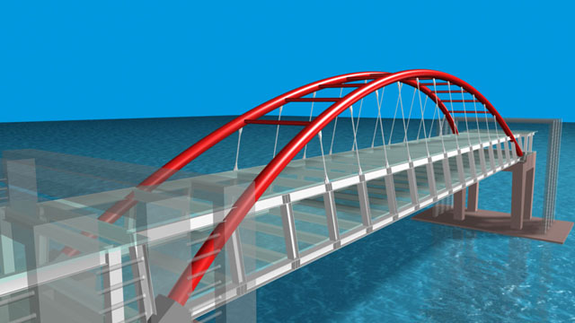
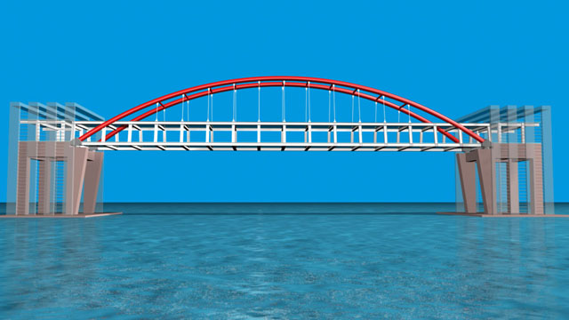

動畫影片：https://www.youtube.com/watch?v=4nbx8lrqs5Y
RENDER圖時間：1小時45分
解析度：1024x576
使用軟體：AutoCAD 2010 3ds Max 9
這次是由AutoCAD建模，再透過3ds Max貼材質、打燈光，最後輸出成動畫!!
在2001年時有上補習班學過3ds Max，但是到現在老早都還給老師了~
Max這部份我花了4天左右的時間，剛開始也是花了相當多的時間熟悉介面，所幸3D空間觀念及指令操作也蠻類似AutoCAD的!
而遇到不了解的地方就看書或是到線上觀看教學影片，光是攝影機架設(路徑約束)就讓我搞了好久~
踏出第一步真的是艱辛的，所以也就硬著頭皮試看看，像最後水中倒影的效果也是爬文及上論壇發問得到的幫助(知識)!!
我想這模型還有很多細節要處理，而我們的產業別是不用太精緻(逼真)，整體視覺感學到位即可，所以初次發表請大家多多指教!
以下圖片及影片跟各位分享~




